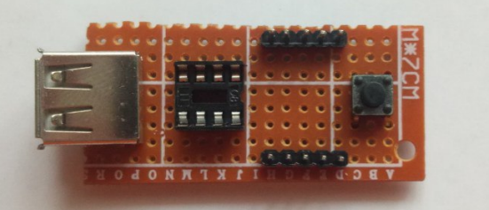
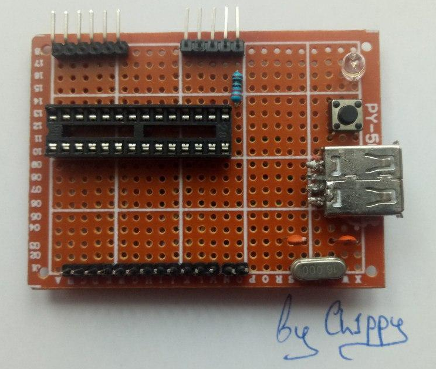
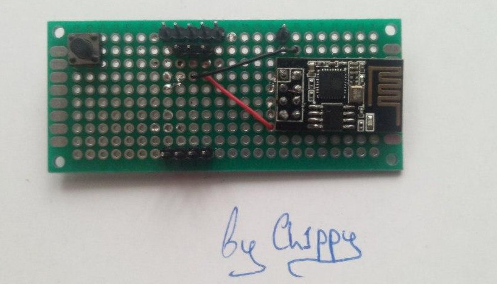

Sergiy(Ch1ppy) Kireev
personal site
My devices:
Attino1385

Attino1385v1 developed by Ch1ppy. Board based on Attiny microcontrollers. It can use Attiny 13/25/45/85.
See more on GitPage
or in Documentation
Сompleted development
Serjuino Uno

Serjuino Uno is Arduino Uno developed by Ch1ppy.
See more on GitPage
or in Documentation
In development
ESP-01 Sheld (esp1no)

Esp1no is sheld based on esp-01 and developed by Ch1ppy.
See more on GitPage
In development
In plans: